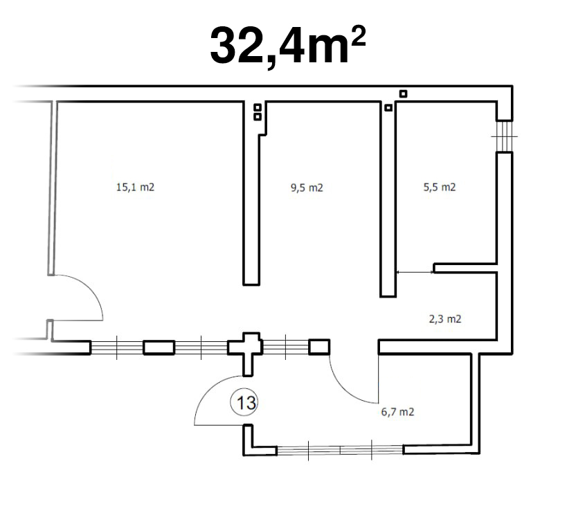
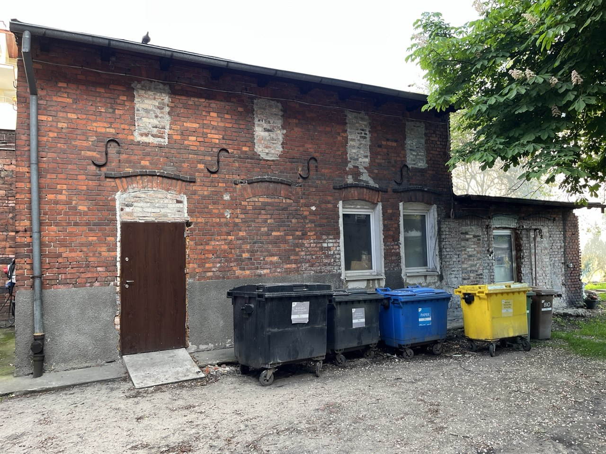

Obecny stan
Mamy lokal do dyspozycji!
W maju 2026 skontaktowałem się z przychylnym temu projektowi człowiekiem i mamy do dyspozycji lokal w którym możemy stworzyć Hackerspace!
 
Nasz dobroczyńca i mocodawca, który na razie pozostaje anonimowy, zaoferował lokal, który jest jego własnością. Lokal mieści się w podwórzu kamienicy przy ul. Bocianowo w Bydgoszczy. Teren jest zabezpieczony wejściem na domofon, ogrodzony i zadbany. Pod nadzorem kamer monitoringu. W pobliżu drzewa i miejsce na ewentualny grill oraz aktywność na świeżym powietrzu.
{kind=link}
{kind=link}
Zadania do wykonania na teraz
Pomieszczenia, które otrzymujemy do dyspozycji, należy we własnym zakresie doprowadzić do użyteczności; zalegają tam różne sprzęty i pozostałości po pracach remontowych. Brakuje również osobnych drzwi, ale to sprawa mniej paląca (właściciel zobowiązał się do wstawienia takowych). Lokal na chwilę obecną nie posiada dostępu do internetu, wody. Nie ma także elektryczności. Jest to stan tymczasowy. Po uprzątnięciu i przeprowadzeniu remontu wszystko będzie dostępne. Wszystko leży, że tak to ładnie ujmę, w naszych rękach.Wizja działalności
Pierwszy raz zetknąłem się z podobnym zjawiskiem, gdy mój przyjaciel z Łodzi opowiedział mi o tamtejszym FabLabie. Już wtedy słysząc, do czego służy takie miejsce, chciałem w takim być i poznawać interesujących ludzi.Słyszałem, że były podejmowane próby założenia Hackerspace w Bydgoszczy. Kolejną próbę podejmuję ja widząc, jak wiele nauki i zabawy to przynosi.
Nasz dobroczyńca zaproponował utworzenie też w tym miejscu czegoś na wzór dawnych kafejek internetowych; ze wsparciem dla osób starszych, osób wykluczonych cyfrowo itd. Podobną działalność oferuje jeden sklep komputerowy na Wyżynach, jednakże u nas miałoby to się odbywać non-profit.
Myślę że to dobry pomysł, ponieważ przyniósłby takiemu miejscu większego prestiżu oraz poważania. Poważania w bydgoskim społeczeństwie, które o hackerspejsach słyszało tylko z legend.
Podsumowując: widzę bydgoski hackerspace jako tygiel intelektualistów promujący ciekawe zainteresowania. Miejsce, w którym możnaby prowadzić warsztaty zajęciowe a po godzinach urządzać zajadłe dyskusje o wyższości vima nad emacsem lub odwrotnie.